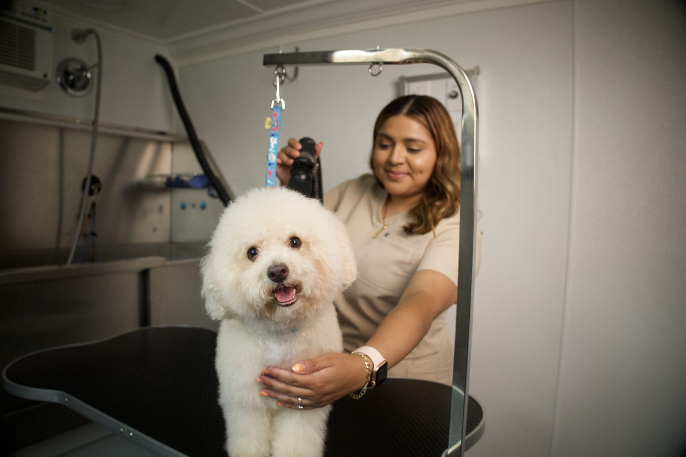
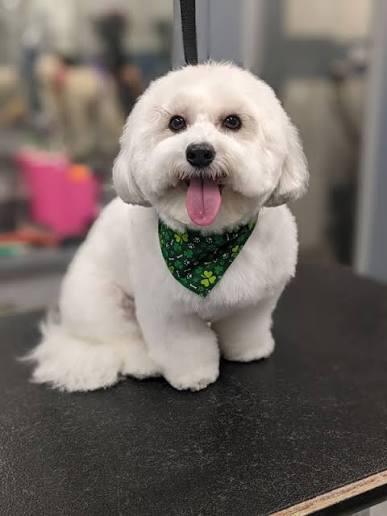
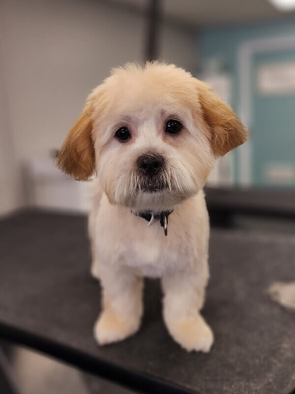
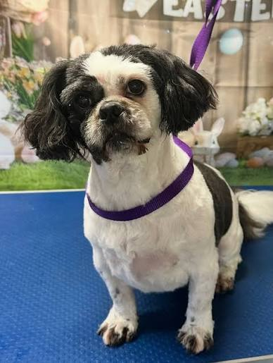
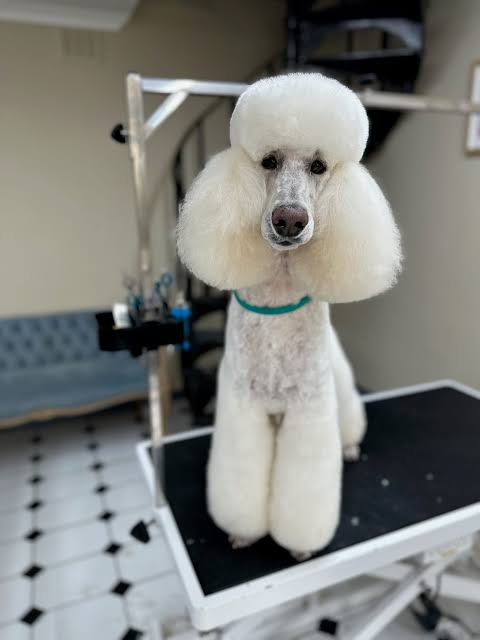
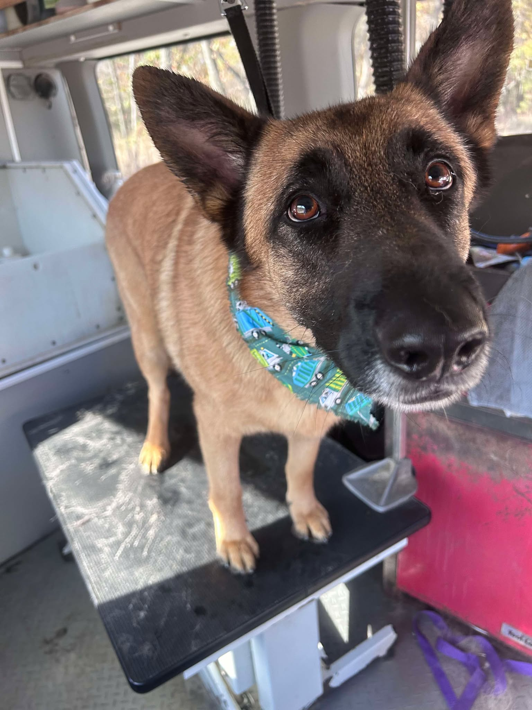

Bath & Brush
Warm bath, blow dry, brush-out, ear cleaning, and a polished finish for regular upkeep.
We help Phoenix pups look adorable and feel comfortable with one-on-one grooming, thoughtful handling, and a bright, welcoming experience from drop-off to pickup.


Hi, I’m Jessica, a Phoenix groomer who believes great grooming should feel calm, kind, and personal. I love helping dogs feel clean and comfortable while making pet parents feel fully informed and at ease.
My goal is simple: send every pup home looking adorable, feeling better, and excited to come back.
Talk to JessicaThe service lineup is built for everyday maintenance, special freshen-ups, and coat care that keeps your pup comfortable in the Phoenix heat.
Warm bath, blow dry, brush-out, ear cleaning, and a polished finish for regular upkeep.

Bath, haircut, nail trim, sanitary trim, face tidy, and a style tailored to your dog’s coat.

A gentle first experience focused on comfort, confidence, and positive associations.

Ideal between full appointments for paws, eyes, face, and sanitary areas.

Extra brushing and coat-release care to cut down on tumbleweeds of fur at home.

Blueberry facials, teeth brushing, nail buffing, and seasonal upgrades for extra pampering.
Pricing is easy to understand up front. Final quotes may shift a little based on matting, breed, coat condition, or if extra time is needed for comfort and safety.
Book a GroomingFrom $75
Bath, brush, haircut, nails, ear cleaning, and finishing spritz.
From $45
Perfect for keeping coats fresh between haircuts.
From $55
Gentle intro with light cleanup and lots of patience.
From $35
Quick maintenance visit for face, feet, and sanitary care.
Fresh trims, happy faces, and polished finishes that show the kind of clean, feel-good grooming Phoenix pet parents can expect from every visit.





Most dogs do best every 4 to 8 weeks depending on coat, shedding, and how tidy you like them to stay.
Yes. Puppy appointments are slower, gentler, and focused on creating a positive first experience.
That’s okay. We use a calm approach, take breaks when needed, and prioritize comfort over rushing.
Absolutely. Inspiration photos are welcome, and we’ll talk through what works best for your dog’s coat and maintenance routine.
Most appointments take about 1.5 to 3 hours depending on your dog’s size, coat, and the service booked.
Yes, but we’ll always talk through the safest and kindest option first. Severe matting may require extra time or a shorter comfort-first haircut.
Just bring your pup, any grooming notes, and inspiration photos if you have a specific look in mind.
You can call, email, or use the booking button on the page and we’ll help you find the best time for your dog.
Use this section for your phone number, a booking link, or a simple intake form.